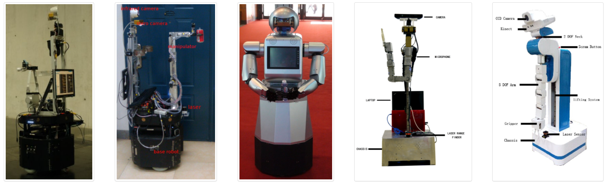
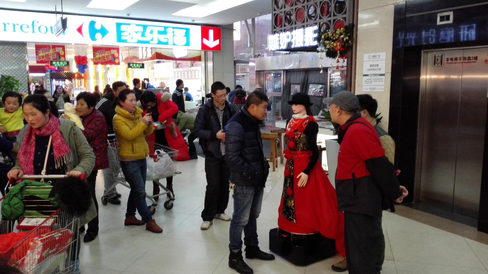
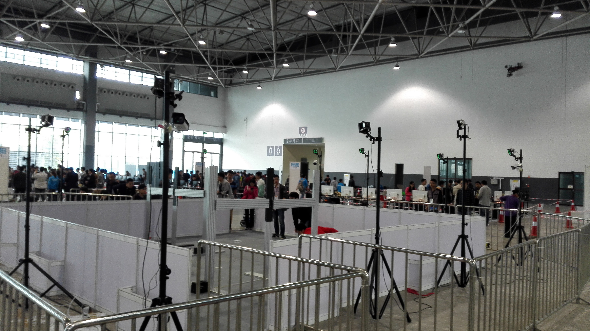
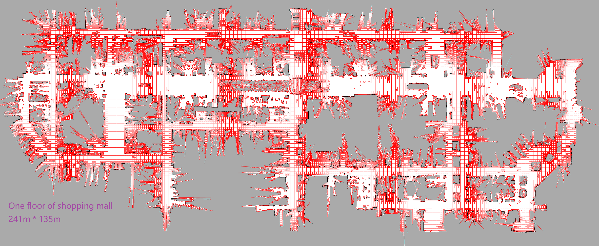

News
[2021.07.01] One paper "An Empirical Study of GUI Widget Detection for Industrial Mobile Games" is accepted as industry paper by FSE 2021.
[2021.05.25] One paper "A Future-Oriented Cache Management for Mobile Games" is accepted by COG 2021.
[2021.05.20] One paper "GLIB: Towards Automated Test Oracle for Graphically-Rich Application" is accepted as research paper by FSE 2021.
[2021.05.08] One paper "MetaCURE: Meta Reinforcement Learning with Empowerment-Driven Exploration
" is accepted by ICML 2021.
[2021.04.29] One paper "Reward-Constrained Behavior Cloning" is accepted by IJCAI 2021.
[2021.01.26] Our talk "Beyond Pre-training: Experiences of Applying Imitation Learning in Game AI" is accepted by GDC AI Summit 2021.
[2021.01.26] Our team "Satlty Fish" win the Second Prize out of 1138 teams in the Football Competition hosted by Google Research and Manchester City F.C.
[2020.09.26] One paper "Learning to Utilize Shaping Rewards: A New Approach of Reward Shaping" is accepted by NeurIPS 2020.
[2020.08.04] One paper "Regression Testing of Massively Multiplayer Online Role-Playing Games" is accepted by ICSME 2020.
[2020.06.11] Two papers are accepted by COG 2020.
[2020.06.01] One paper "Q-value Path Decomposition for Deep Multiagent Reinforcement Learning" is accepted by ICML 2020.
[2020.04.20] Two papers are accepted by IJCAI 2020.
[2020.01.15] Two papers are accepted by AAMAS 2020.
[2019.12.25] Our talk "Building Intelligent Game Testing System in Netease MMORPG Game" is accepted by GDC AI Summit 2020.
[2019.12.20] One paper "Action Relation Network: Considering the Effects of Actions in Multiagent Systems" is accepted by ICLR 2020.
[2019.11.11] Two regular and one workshop papers are accepted by AAAI 2020.
Research Interest
I worked in the field of robotic and multi-agent system during my school period, especially in localization, mapping, navigation, path planing and etc.
Currently, I am leading the reinforcement learning (RL) research in Fuxi AI Lab@Netease, mostly focusing on deep reinforcement learning and Game AI,
including the following topics:
- High-efficient, transferable, explainable deep reinforcement learning
- Distirbuted reinforcement learning framework
- Multi-agent learning
- Imitation learning
- Population-based reinforcement learning
- Game oriented applications of reinforcement learning
Education
| 2012.9-2017.7 |
Ph.D in Robotics Lab, University of Science and Technology of China(USTC) |
Supervisor: Prof. Xiaoping Chen |
| 2008.9-2012.7 |
B.E. in Shcool of Computer Science, China University of Petroleum (UPC) |
|
Publications
Some interested papers are listed, visit
Google Scholar for completed publications.
Yuechen Wu*, Yingfeng Chen*, Xiaofei Xie, Bing Yu, Changjie Fan and Lei Ma,
“"Regression Testing of Massively Multiplayer Online Role-Playing Games,”
Ke Chen*, Yufei Li*, Yingfeng Chen♦, Changjie Fan, Zhipeng Hu, Wei Yang, Jianye Hao, "GLIB: Towards Automated Test Oracle for Graphically-Rich Applications," ESEC/FSE Research Papers, 2021.
Yu Chen*, Yingfeng Chen*♦, Zhipeng Hu, Tianpei Yang, Changjie Fan, Yang Yu, Jianye Hao, "Learning Action-Transferable Policy with Action Embedding," Published on arXiv, 2021.
Yujing Hu, Weixun Wang, Hangtian Jia, Yixiang Wang, Yingfeng Chen♦, Jianye Hao, Feng Wu, Changjie Fan,
"Learning to Utilize Shaping Rewards: A New Approach of Reward Shaping," Proceedings of the Neural Information Processing Systems(NeurIPS), 2020
Yuechen Wu*, Yingfeng Chen*, Xiaofei Xie, Bing Yu, Changjie Fan and Lei Ma,
“Regression Testing of Massively Multiplayer Online Role-Playing Games,”
Proceedings of the International Conference on Software Maintenance and EvolutionIntelligence(ICSME)
, 2020.
Ruimin Shen, Yan Zheng, Jianye Hao, Zhaopeng Meng, Yingfeng Chen♦, Changjie Fan, Yang Liu,
“Generating Behavior-Diverse Game AIs with Evolutionary Multi-Objective Deep Reinforcement Learning,”
Proceedings of the International Joint Conference on Artificial Intelligence(IJCAI)
, 2020.
Hangtian Jia, Chunxu Ren, Yujing Hu, Yingfeng Chen♦, Tangjie Lv, Changjie Fan, Hongyao Tang, Jianye Hao,
“Mastering Basketball with Deep Reinforcement Learning: An Integrated Curriculum Training Approach,”
Proceedings of the International Conference on Autonomous Agents and MultiAgent Systems(AAMAS)
, 2020.
Yaodong Yang, Jianye Hao, Guangyong Chen, Hongyao Tang, Yingfeng Chen, Yujing Hu, Changjie Fan, Zhongyu Wei;
“Q-value Path Decomposition for Deep Multiagent Reinforcement Learning,”
Proceedings of the International Conference on Machine Learning(ICML), 2020.
WenJi Zhou, Yang Yu, Yingfeng Chen, Kai Guai, Tangjie Lv, Changjie Fan, ZhiHua Zhou,
“Reinforcement learning experience reuse with policy residual representation,”
Proceedings of the International Joint Conference on Artificial Intelligence(IJCAI), 2019.
Haotian Fu, Hongyao Tang, Jianye Hao; Zihan Lei, Yingfeng Chen, Changjie Fan,
“Deep Multi-Agent Reinforcement Learning with Discrete-Continuous Hybrid Action Spaces,”
Proceedings of the International Joint Conference on Artificial Intelligence(IJCAI), 2019.
Yingfeng Chen, Feng Wu, Wei Shuai, Xiaoping Chen,
“Robots serve humans in public places—KeJia robot as a shopping assistant,”
International Journal of Advanced Robotic Systems, 2017.
Yingfeng Chen, Shuai Wei, Xiaoping Chen,
“A probabilistic, variable-resolution and effective quadtree representation for mapping of large environments,”
Proceeding of the IEEE International Conference on Advanced Robotics(ICAR), 2015.
Projects
2017.07~Present : Fuxi AI Lab in Netease
We mainly focus in landing reinforcement learning to Game AI and agent-based Game testing, more related applications are also explored,such as game generation, GPU cache managerment and so on.
Game AI:

Game Testing:

2012.07~2017.07 : Kejia Project, Robotic Lab in USTC
Ke Jia Service Robot: Mapping, Localization and Navigation
[Demo Video]

KeJia Standard Robot Platform has been used in the annual RoboCup@Home competition since 2009 with outstanding achievements---a champion and three runners-up in the past 5 years. After the 8-year evolution through practice in competition, research and education, now the platform is suitable for both specialists and newcomers in Robotics and related fields.
[Technical Report]
[Demo Video]
| Event |
Place |
Award |
Role |
RoboCup China Open@Home league 2013 |
Hefei, China |
Champion |
Major |
RoboCup@Home league 2014 |
Joao Pessoa, Brazil |
Champion |
Major |
RoboCup China Open@Robot Benchmarking 2015 |
Guiyang, China |
Champion |
Leader |
RoboCup@Benchmarking Service Robots 2015 |
Hefei, China |
Champion |
Leader |
Guide Robot in Shopping Mall
[Technical Report]
[Demo Video]

Kejia shopping mall robot is adapted from Kejia service robot platform, it was deployed in a large modern shopping mall in Hefei with the size of 30,000 m2 and more than 160 shops. Field trials were conducted for 40 days, which is probably the first shopping mall guide robot in China.
Motion Capture System for Robot

For Robot Testing:
- Cleaning Robots Test
- Anhui Robot Technology Standard Innovation Base
For Robot Calibration:
- General Batch-Calibration Framework
Large Scale SLAM for Indoor and Outdoor
[Technical Report]

Services
- AAAI Member, 2019-Now
- Program Committe Member of ICML 2021
- Program Committee Member of NeurIPS 2020, NeurIPS 2021
- Program Committee Member of AAAI 2020, AAAI 2021
- Program Committee Member of IJCAI 2020, IJCAI 2021
- Program Committee Member of ECAI 2020
Awards
- Champion of the World Robocup@Home Competition, Brazil, 2015 (The first Asian champion)
- Champion of the China Robocup@Home Open Competition, 2013&2014
- Outstanding Undergraduate, China University of Petroleum, 2012
- First Prize of Province in the competition of "FreeScale Smart Car", 2011
- National Scholarship, Ministry of Education, 2011
- First-class scholarship, 2009&2010
Updating time: 2021.05.20